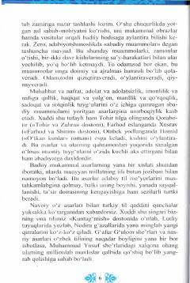

8A8-sinf o'quvchilari uchun mo'ljallangan adabiyot fani darsligi.
Ushbu darslik 8-sinf o'quvchilari uchun mo'ljallangan bo'lib, o'zbek adabiyoti tarixi, xalq og'zaki ijodi namunalari va mumtoz asarlar haqida ma'lumot beradi. Kitobda dostonchilik san'ati, badiiy asarlarning g'oyaviy-badiiy xususiyatlari hamda "Kuntug'mish" dostoni kabi mumtoz namunalar batafsil tahlil qilingan.